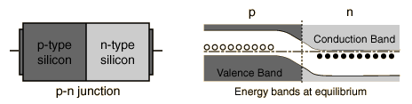

P-N Junction
One of the crucial keys to solid state electronics is the nature of the P-N junction. When p-type and n-type materials are placed in contact with each other, the junction behaves very differently than either type of material alone. Specifically, current will flow readily in one direction (forward biased) but not in the other (reverse biased), creating the basic diode. This non-reversing behavior arises from the nature of the charge transport process in the two types of materials.

The open circles on the left side of the junction above represent "holes" or deficiencies of electrons in the lattice which can act like positive charge carriers. The solid circles on the right of the junction represent the available electrons from the n-type dopant. Near the junction, electrons diffuse across to combine with holes, creating a "depletion region". The energy level sketch above right is a way to visualize the equilibrium condition of the P-N junction. The upward direction in the diagram represents increasing electron energy.
|
Index
Semiconductor concepts
Semiconductors for electronics |